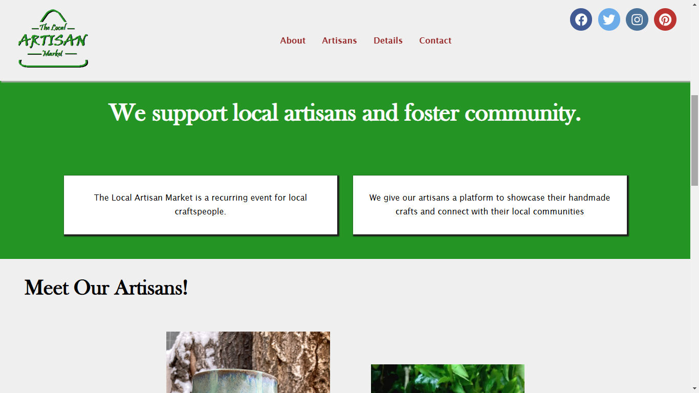
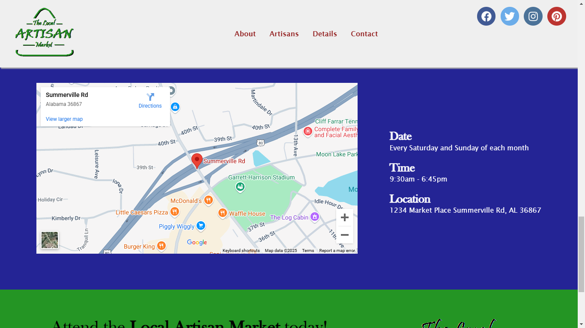
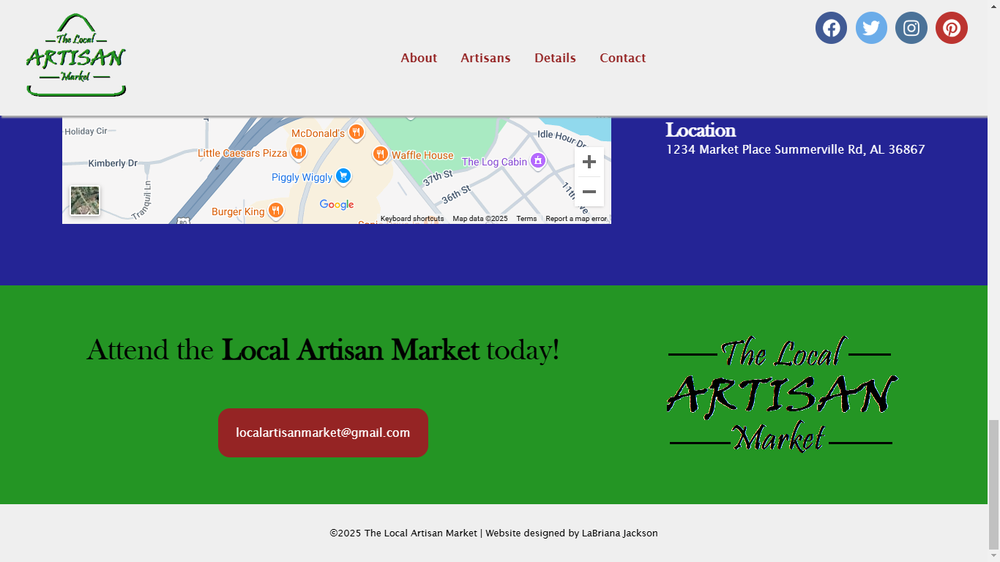
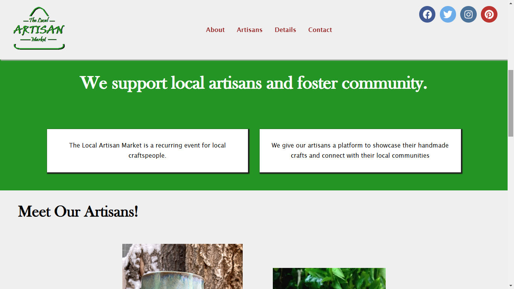
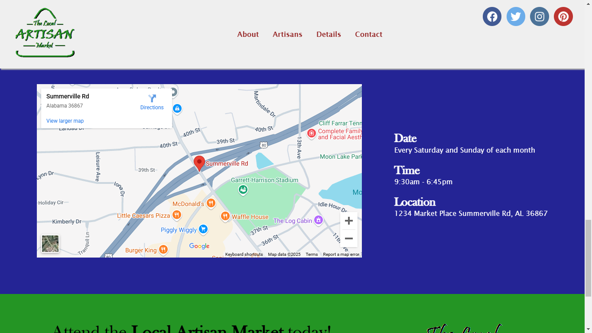
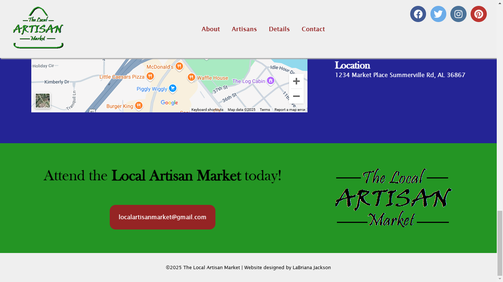

The Local Artisan Market
 





This is a webpage advertising a fictional event called The Local Artisan Market, whose purpose is to showcase local crafts and to foster connections between local artisans and their community.
For this personal project, I gave myself a project brief with Google and did research on artisans and existing sites to find common styles.
I commonly saw sites with white backgrounds,and if the site did use color, than it was a bold color scheme with contrasting colors. Most websites feature the brand name in a circle or oval, although I saw one site use a triangle. I wanted the logo I designed to be rounded, but I also wanted it to maintain a triangular shape.
Click here to view the repository on my GitHub
Click here to visit the webpage
Click here to view the PDFs: Project Brief, Artisan Resarch